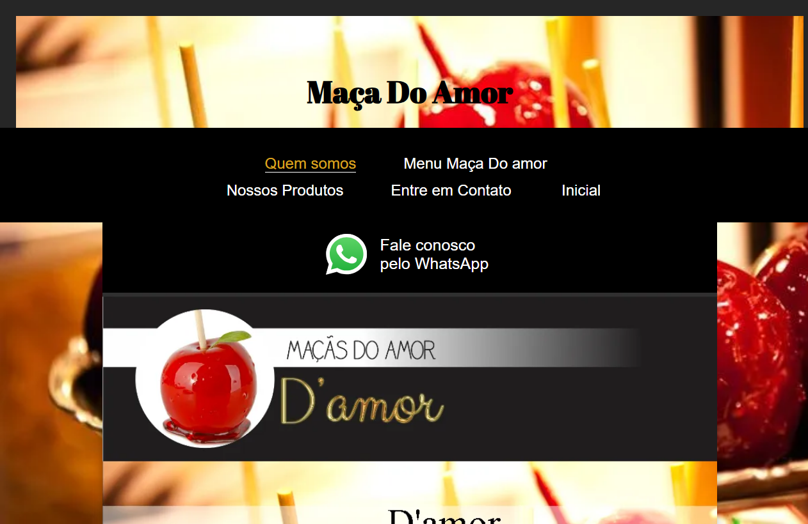
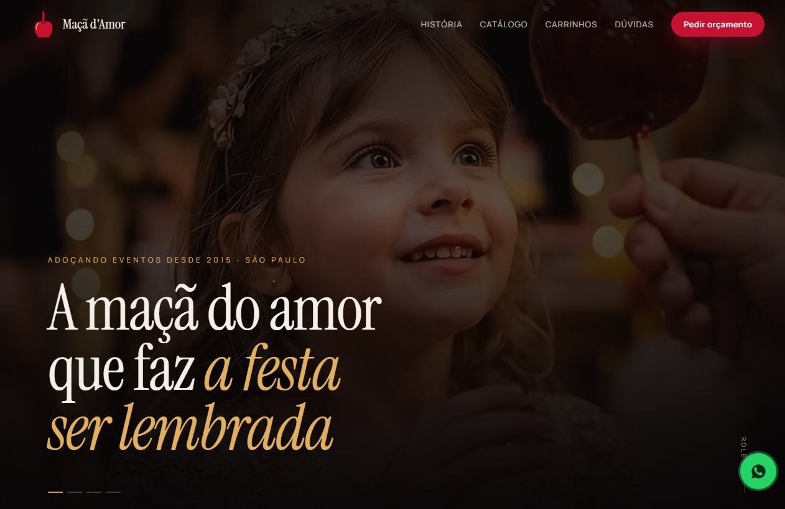

Post 05 · Terça-feira (10/11) · Estudo de Caso Real
A mesma tradição. Outra percepção de marca.
Feed 4:5 · Antes & Depois Maçã do Amor
A mesma tradição. Outra percepção de marca.
Antes

Depois · Vocação

Maçã do Amor · Nova direção visual e catálogo preparado para conversão imediata no celular.
Legenda sugerida: O produto sempre foi impecável — faltava o ambiente digital refletir esse mesmo cuidado. No redesenho da Maçã do Amor, substituímos um layout antigo e difícil de navegar por uma vitrine sensorial, rápida e direta para pedidos de eventos no celular. Veja mais transformações no link da bio.
Post 06 · Quarta-feira (11/11) · Carrossel 4 Lâminas
Três segundos. É tudo o que o cliente espera.
01 · Capa
Três segundos.
É tudo o que o cliente espera antes de fechar a sua página.
No celular, a lentidão destrói a venda antes mesmo do seu argumento começar.
02 · O Dado
53%
dos visitantes abandonam um site no celular se ele demora mais de três segundos para abrir.
Não importa o quão bom seja o seu serviço: se a tela fica em branco carregando scripts pesados, metade do seu público vai embora em silêncio.
03 · O Contraste
Templates comuns
Lentos no 4G, cheios de plugins pesados e distração visual.
Arquitetura Vocação
Código limpo que abre em menos de meio segundo no celular.
04 · Fechamento
Quanto tempo o seu site leva para abrir no celular hoje?
Peça uma análise técnica da sua página atual pelo link da bio.
Legenda sugerida: Três segundos é o limite da paciência de quem navega pelo celular. Estudos do próprio Google mostram que 53% dos acessos móveis são abandonados quando uma página demora mais do que isso para carregar. Na Vocação, desenvolvemos páginas sem templates pesados, projetadas para abrir em menos de 0.5 segundo e conduzir o cliente direto ao contato. Faça o diagnóstico do seu site pelo link na bio.
Post 07 · Quinta-feira (12/11) · Card Único Editorial
Sua empresa fecha às 18h. A busca do cliente, não.
Feed 4:5 · Tipografia Escultural 21:40
21h40.
Sua porta fecha às 18h. Mas é à noite que o cliente decide para quem vai ligar amanhã.
Um perfil estruturado no Google Maps e uma página clara trabalham pela sua reputação mesmo quando não há ninguém no balcão.
Legenda sugerida: Grande parte das decisões de compra e contratação acontece fora do horário comercial — quando o cliente finalmente tem tempo para pesquisar no celular, comparar fotos, ler avaliações e escolher em quem confiar. Quando sua presença no Google Maps e seu site estão bem construídos, sua empresa continua convencendo mesmo de portas fechadas. Saiba mais no link da bio.
Post 08 · Sexta-feira (13/11) · Carrossel 4 Lâminas
Sem reuniões intermináveis. Sem pedir textos do zero.
01 · A Pergunta
Por que tantos empresários adiam a atualização do próprio site por anos?
02 · O Motivo Real
Porque quem lidera uma operação real não tem tempo para escrever textos do zero ou participar de seis reuniões.
Projetos digitais costumam travar quando o fornecedor transfere toda a responsabilidade de conteúdo para o cliente.
03 · O Processo Vocação
Na Vocação, nós fazemos o trabalho pesado por você.
Pesquisamos o seu mercado, organizamos os argumentos comerciais, refinamos a direção visual e entregamos a estrutura pronta em até uma semana.
04 · Fechamento
Sua única tarefa é aprovar o resultado no ar.
Converse diretamente conosco pelo link na bio.
Legenda sugerida: O maior motivo pelo qual empresas excelentes continuam com sites defasados é a falta de tempo do dono para gerenciar o projeto. Na Vocação, eliminamos as reuniões intermináveis e os formulários gigantescos: nossa equipe estuda sua operação, estrutura os textos e entrega tudo pronto para aprovação em poucos dias úteis. Fale conosco pelo link da bio.